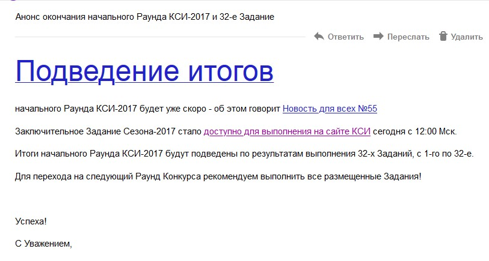
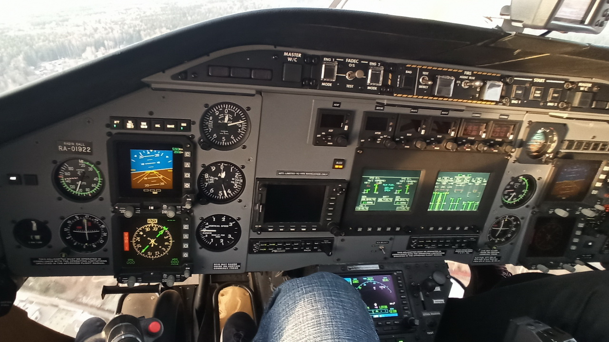
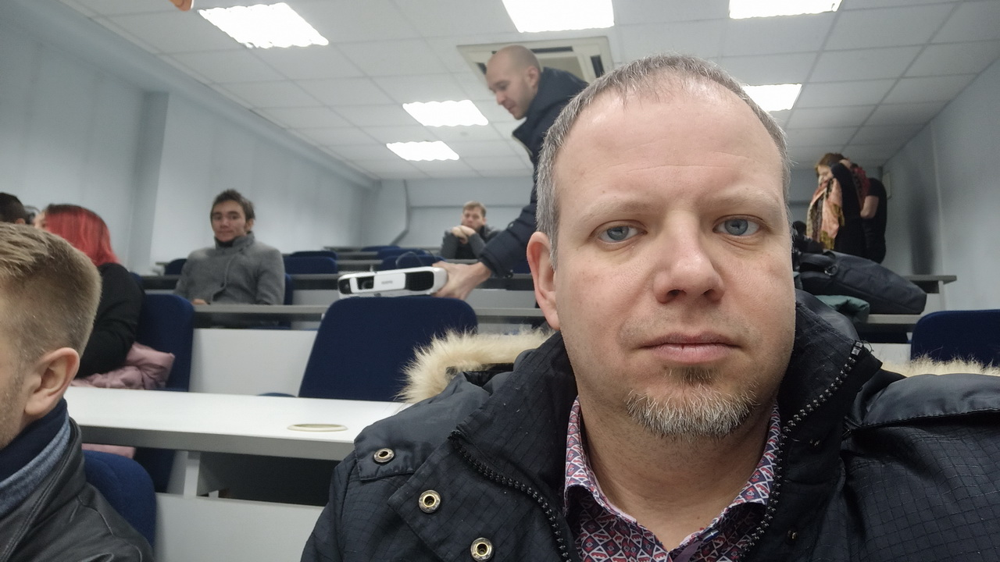
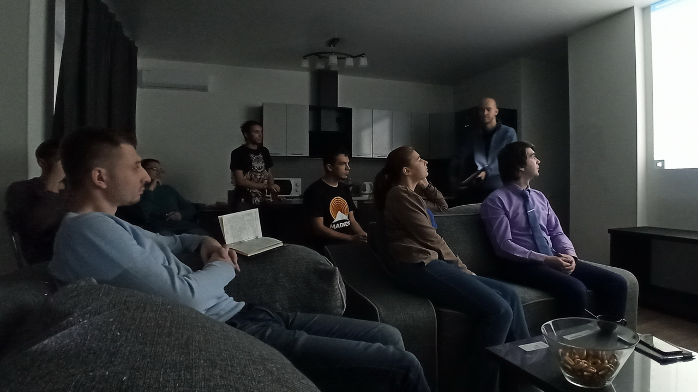

По всем вопросам пишите на:
brmoney@ya.ru
-
Часть 1. «Папа программист» Меня зовут Сергей. Мне 36 лет. В Конкурсе Созидательного Интеллекта мой СН 58957.Родился и живу в городе Пенза. Он находится южнее Москвы в 650 километрах. Родился я в семье инженеров, поэтому выбор будущей профессии был для меня предопределён. В 2000 году поступил в Пензенский государственный университет на специальность «Вычислительные машины, системы, комплексы и сети». В 2005 году окончил университет с красным дипломом, и пошёл работать системным администратором, это хорошо у меня получалось на протяжении многих лет.Позже я встретил свою любовь, и в 2008 году у нас была свадьба. Через некоторое время совместной жизни Полина начала мотивировать меня на смену рода деятельности, говорила: «Делай сайты, пиши программы, это у тебя хорошо получается». Но я был не настолько уверен в себе и не соглашался. Шло время, у нас родился сыночек, когда ему было 5 – 6 лет, он уже был уверен, что будет, как папа, программистом. Его слова задевали что-то внутри меня, ведь на самом деле я не занимаюсь программированием и с этого момента стала формироваться профессия программиста в моей жизни… И в то же время профессия программиста становилась всё перспективнее, прибыльнее и интереснее мне.
-
Часть 2. «Путь в КСИ» Моя дорога в КСИ началась с рекламы в сети Интернет, кликнув по ней, я начал изучать, что это за конкурс и зачем мне в нём участвовать. Это было 31 декабря 2017 года. Я зарегистрировался в конкурсе и 2 января 2018 года получил сообщение о доступности к решению 23-го задания начального раунда. Решать пришлось сразу много заданий, так как 11 января я получил письмо о скором окончании начального раунда.Я «сдулся», подумал о несправедливости того, что только сейчас узнал о конкурсе, а все остальные выполняли задания постепенно, и не сделал все доступные задания. В конце января попал в больницу, вышел 8 февраля, было не до КСИ. Но 16 февраля конкурс напомнил о себе сообщением:Собравшись с силами, я доделал все 32 задания КСИ и… в начале апреля месяца узнал о том, что прошёл в 1 раунд. Восторгу не было предела и в этот раз я решил делать все задания в срок, тем более, что в 1 раунде условия были жестче. 1 раунд ещё не закончился, в первых числах августа я получил звонок из Германии! Несколько секунд я был в восторге, меня выбрали, я рад. Но в результате разговора, показав незнание английского и немецкого языков потерял возможность пройти стажировку в Дюссельдорфе. Я сильно огорчился до конца августа доделал все задания, во 2 раунд не прошёл и забыл о КСИ. Больше года спустя 15 ноября 2019 года мне позвонила девушка и сообщила, что я приглашён на стажировку в СДИ, являющейся стратегическим партнером КСИ. Сначала были сомнения в реальности происходящего, но когда через 2 дня мне позвонил куратор моей стажировки, а ещё через день я получил письмо на почту я понял что такую возможность терять нельзя и «побежал» покупать билеты. О том, как проходила стажировка читайте ниже.
-
23.11.2019 «День заезда и знакомства» В 8:23 поезд прибыл на Казанский вокзал. Вот я и в Москве! В этот день было чистое небо и яркое солнце. На перроне меня встретил водитель, с ним уже был один из участников стажировки - Дмитрий. На комфортабельном автомобиле Шевроле нас привезли в апартаменты. Впечатлила площадь квартиры. Нас с Дмитрием поселили в штаб-квартиру, в которой будут проходить некоторые мероприятия стажировки. Огромный зал с кухней, длинный широкий коридор к своему концу делящийся на 2 отдельных самодостаточных комнаты с ванной и туалетом.В моей была просто огромных размеров кровать, рабочий стол и телевизор, а также очень удобная гардеробная, где на 8 дней «прописались» мои вещи.Из моего окна был виден город, а за окном комнаты Дмитрия, красивый, хоть и осенний, Битцевский парк.
 Этот день закончился знакомством со всеми участниками стажировки и руководителями проектов. Я узнал интересные истории людей из Конкурса Созидательного Интеллекта попавших в СДИ и работающих по профессии не совпадающей с полученным ранее образованием. Познакомившись, и обсудив, возникающие у участников стажировки вопросы мы приступили к игре в «Мафию», честно говоря, я не очень люблю эту игру, наверное, потому что играл в неё всего лишь пару раз и не умею играть. На мою удачу или нет, я не знаю, но на втором круге игры я выбыл, наблюдая дальше на развитие событий со стороны. Казалось бы, разные люди с разных концов страны, не знакомые между собой, что их может объединять? Мой ответ не знаю, но после 2-х часового общения вечером в субботу у меня осталось четкое чувство, что я давно знаю всех этих людей и мне приятно с ними общаться! Встретимся во втором дне моего участия в стажировке Ст7.
Этот день закончился знакомством со всеми участниками стажировки и руководителями проектов. Я узнал интересные истории людей из Конкурса Созидательного Интеллекта попавших в СДИ и работающих по профессии не совпадающей с полученным ранее образованием. Познакомившись, и обсудив, возникающие у участников стажировки вопросы мы приступили к игре в «Мафию», честно говоря, я не очень люблю эту игру, наверное, потому что играл в неё всего лишь пару раз и не умею играть. На мою удачу или нет, я не знаю, но на втором круге игры я выбыл, наблюдая дальше на развитие событий со стороны. Казалось бы, разные люди с разных концов страны, не знакомые между собой, что их может объединять? Мой ответ не знаю, но после 2-х часового общения вечером в субботу у меня осталось четкое чувство, что я давно знаю всех этих людей и мне приятно с ними общаться! Встретимся во втором дне моего участия в стажировке Ст7. -
24.11.2019 «Прогулка на вертолёте, ресторан, что ещё готовит этот день?» Проснулся не очень рано, обычно я встаю раньше, но вчера пришлось лечь поздно после полуночи. Есть ощущение того, что этот день готовить интересные новые встречи и зажигательные события! Первым событием этого дня был сбор в штаб-квартире стажирующихся и кураторов, обсуждение организационных вопросов, были объяснены некоторые цели и задачи стажировки Ст7.Прошло совсем немного времени и вот мы уже погрузились в машины и едем в вертолётный загородный клуб. Как говорится «в тесноте, да не в обиде» я сидел в третьем ряду автомобиля Митсубиши, надо сказать расположился я там с комфортом. Пока ехали в Аносино, от нечего делать изучал архитектуру Москвы. Грандиозные массивные здания. Каждый район по-своему интересен, дома выглядят индивидуально, часто в дизайне нескольких зданий просматривается их принадлежность к одному кварталу.Приехали в вертолетный клуб, ощущения, как будто попал в какой-то фильм, большой аэродром для вертолётов, отдельное здание для ожидающих с возможностью попить кофе, дорогая красивая и комфортная мебель.Здесь же впервые вживую я увидел Андрея Геннадьевича Морозова – очень интересный в общении человек, со своей подачей, он в непринуждённой юмористической форме задавал серьезные вопросы, по ответам на которые отбирались люди для полёта в переднем ковше вертолёта. Вопросы были в основном про устройство вертолёта, но, даже не зная ответа, можно было «пошевелив» мозгами и включив свой Созидательный Интеллект ответить на вопрос. Я попал в число пассажиров переднего ковша.Ощущения от полёта невозможно передать словами! Я никогда не задумывался над этим, но увидев, как Андрей Геннадьевич управляет вертолётом понял, что это достаточно сложный процесс, езда на автомобиле по сравнению с ним, как говорится «детский лепет».После того, как все покатались на вертолёте, нас повезли в ресторан, где в непринуждённой обстановке Андрей Геннадьевич знакомился со стажирующимися, каждый рассказывал о себе, о том, как попал в КСИ (конкурс созидательного интеллекта), почему заинтересовался, и чего хочет в будущем от КСИ получить. После знакомства можно было задать любые вопросы Андрею Геннадьевичу, а он в свою очередь на них ответил и хохмил весь вечер, рассказывая между тем интересные серьезные истории из своей жизни.В ходе беседы, кстати, Андрей Геннадьевич рассказал, что ремонтом квартир, в которых мы проживаем, занимался человек далёкий от строительства, но выбранный им по КСИ фактору. И надо сказать ремонт очень хороший! День был очень насыщен впечатлениями и по приезду я сразу же лёг спать.
-
25.11.2019 «Учебный день» Сегодня был насыщенный день, всех стажирующихся, в том числе и меня возили в офис СДИ, где читали нам лекции фактически весь рабочий день. В этот я узнал много всего интересного по методологии, использующейся в СДИ. Рассказывали нам профессиональные лекторы, это можно понять из того, что информация была качественно донесена, всё понятно, а на любые вопросы от слушателей были даны конкретные ответы с примерами. Качество лекций можно охарактеризовать ещё и тем, что некогда было скучать и не хотелось уснуть.После лекций мы все стажирующиеся поехали по домам, меня с остальными приезжими отвезли в апартаменты. Здесь некогда было скучать, куратор группы веб-разработки Сергей собрал нас в штаб-квартире. В этом месте хотелось бы чуть-чуть отвлечься от основного повествования… Я впервые вживую «прикоснулся» к термину штаб-квартира компании, да я слышал ранее и в статьях, и в фильмах/сериалах, но чтобы я был в гуще событий, такого ещё не было! Продолжим. Здесь в штаб-квартире началось оживлённое обсуждение задачи группы веб-разработки на время стажировки. Сергей сразу же поставил нам основную задачу, нам за 3,5 дня необходимо разработать небольшую доску объявлений. По Методологии, о которой мы узнали на лекции необходимо описать несколько фаз Проекта, чем и занималась группа веб-разработки под руководством куратора Сергея допоздна. Но и на этом день 2 не был закончен, так как ранее я взял на себя обязанность протоколирования лекции прочитанной Аркадием, это была интересная лекция о Проектах и Процессах, но есть несколько моментов: во-первых, она длилась 1 час 19 минут и как можно догадаться для, того, чтобы даже просто набрать текст лекции необходимо немало времени, а на дворе уже ночь, так что часть лекции я разобрал вечером, а часть оставил на утро. Во-вторых, именно на следующий день был разбор моего протокола, так что тянуть было некуда, пришлось рано вставать. В-третьих, забегая вперёд скажу, что как делать протокол я не знал, поэтому с первого раза сдать протокол лектору не получилось… Встретимся в следующем дне.
-
26.11.2019 «Первый день работы над проектом» День начался рано, как Вы помните нужно было заканчивать протокол, да, я успел его закончить к моменту начала разбора протоколов, но… к сожалению, ещё много времени мне потребовалось вечером этого дня, чтобы сделать из моего «конспекта» настоящий протокол. После разбора протоколов 9 стажирующихся работающих по продуктовому направлению уехали в офис, а мы - направление веб-разработки остались в штаб-квартире, продолжив работу над доской объявлений. Когда я совместно с куратором нашего направления Сергеем писал документацию, оставшиеся два участника группы в разнобой накидывали какие-то немыслимые для срока, оставшегося на разработку сайта, идеи. Я решил, что надо куда-то уже двигаться и что-то решать, предложив куратору сразу же разделить обязанности в нашей группе. Обязанности разделились естественным образом: - я буду заниматься написанием документации по методологии, а после этого присоединюсь к остальной группе для написания кода, - Дмитрий, так как у него мощный ноутбук будет писать серверную часть, и работать с базой данных, - Александр приехал с планшетом, поэтому на него я решил возложить написание клиентской части сайта. Получается я – team lead, Дмитрий – back-end программист, Александр – front-end программист, чуть позже я прикоснулся немного и к БД MySQL и к HTML, CSS, Javascript. Шёл первый день работы над нашим проектом, пока не видно было «света в конце тоннеля», и вечером я уже начал переживать о том, что совсем никакого результата нет. После работы над основным проектом я приступил к вечернему протоколированию.
-
27.11.2019 «Второй день работы над проектом. Первый день паники!» Утром снова собрание всех стажирующихся в штаб-квартире и разбор протокола, в этот раз не моего, но было очень интересно посмотреть и может быть даже перенять что-то для себя.И опять день работы над проектом… Я обычно начинаю работу с основной части, а потом уже навожу красоту, Дмитрий же пошёл другим путём, вместо того, чтобы работать над БД, он начал изучать front-end разработку используя технологию node.js. До обеда я просто занимался техническим заданием, а в обед уже начал задаваться вопросом: «прошла почти половина времени, а у нас ещё ничего нет. Почему?». На что Дмитрий ответил, что сейчас он изучит технологию, ему осталось ещё немножко и тогда, всё получится!Но время шло… уже вечер второго дня работы, а результата всё нет и нет. Александр написал шаблон клиентской части сайта, да, это ещё не рабочий сайт, но уже что-то, а вот без БД и серверной части вообще никуда!К вечеру у меня готов макет сайта, техническое задание, куратор Сергей помог мне сделать документы по фазам 0 – 2 Методологии, а серверной части у нас нет. Я начинаю паниковать! Вечером довожу протокол до хорошего с моей точки зрения состояния и ложусь спать.28.11.2019 «Первые результаты. Паника ещё сильнее!» Это уже 3-й день работы над доской объявлений, ещё не видно сдвигов с работе, но прошло больше половины времени. С утра, как обычно, разбираем протокол 3-й лекции, а так же второй раз Аркадий разбирает мой протокол 1-й лекции. Всё хорошо, он меня даже похвалил.Продолжается работа… Сергей проверил ТЗ отправленное мной ещё вчера и выявил некоторые недостатки, я их исправил и собрался помогать ребятам в разработке. Проходит ещё полдня за это время я, пользуясь html и css, привожу в похожий на макет вид странички нашего сайта, а серверная часть всё ещё стоит на месте… Огорчившись молчанием нашего бэкенда, я просто ставлю на свой ноутбук node.js, пишу запрос с базе данных MySQL, находящейся на нашем «сервере», и получаю ответ от базы со всеми данными таблицы. «Всё работает! Всё просто!», восклицаю я, «что же вы ничего не делаете», спрашиваю у Александра. Отдаю свой ноутбук Александру, чтобы он написал клиентский запрос к серверной части доски объявлений, а сам пошёл на интервью. Первое интервью в моей жизни, очень хороший жизненный опыт! Этот день закончился ещё большей паникой, хотя обмен с базой данных уже начинал потихоньку работать и дизайн сайта, хоть и не очень красивый, был готов. Оставалось ещё очень много работы и всего полдня до начала презентаций!29.11.2019 «Решающий день Ст7» С самого утра я паниковал, мы ничего не успевали. Мне казалось, что Дмитрий и Александр вообще не переживают о результатах и о срыве всех сроков. С самого утра я продолжил работу над своей частью проекта. Время шло, проект не был готов, ближе к обеду пришлось опять пустить Александра за мой ноутбук в надежде на то, что тогда он быстрее доделает часть общения с базой данных через сервер. После обеда пришёл куратор Сергей и сказал, что пора бы уже сдать проект ему, мне пришлось показать ему работу клиентской части и больше ничего, так как остальное было не готово. В 14:00 в штаб-квартиру начали подтягиваться стажирующиеся и команда проекта Ст7, нам назначили презентацию проекта в самую последнюю очередь, ну и хорошо. Я смотрел выступления продуктовой группы и ждал хороших новостей от Дмитрия и Александра. Выступления были разнообразные, но все они конечно же «вращались» вокруг биллинговой системы компании СДИ. По времени презентации длились достаточно долго и это было на руку команде нашего проекта. Примерно за час до окончания презентаций продуктовой группы, доска объявлений заработала с базой данных, я отогнал всех от ноутбуков, чтобы они точно ничего не сломали до презентации. И вот настало время моей презентации! Конечно, лучше всего было бы подготовиться заранее, но это не наш метод. Запинаясь и подбирая слова я рассказывал о нашем проекте, о том, что сделал в нём я и что не получилось сделать. Андрей Геннадьевич задавал вопросы, комментировал и поучал. В общем и целом презентация прошла хорошо. После меня о своём вкладе в проект группы веб-разработки рассказал Дмитрий, а за ним и Александр, в этот раз Александр был не очень многословен. Стажировка закончилась на красивой и вкусной ноте, после презентации мы поехали в ресторан, вернулись оттуда в час ночи, а в 2 часа я уже проводил своего соседа Дмитрия на поезд. Лёг спать в полтретьего с намереньем встать часов в 7. Сегодня закончилась стажировка, но не мои приключения в Москве, до встречи завтра!30.11.2019 «Прогулка по Москве» Проснулся я около 9 часов, за окном был туман, наверное, Москва грустит о том, что стажировка окончена и я уезжаю домой… Собрался и поехал в центр Москвы на Красную площадь. Там уже были установлены аттракционы к новому году, залит каток. Из метро я вышел на улицу Никольскую, и мне показалось, что попал в сказку. Жаль, что вечером некогда было сюда съездить, новогодние украшения, я уверен, выглядят в темноте ещё наряднее и красивее! После прогулки по Красной площади я поехал в Москва Сити, для того, чтобы вместе с куратором Сергеем посетить смотровую площадку в башне Федерация. Жаль, что за окном туман и с 89 этажа башни обзор всё же был ограничен. Позже, когда мы попрощались с Сергеем и я пошёл на станцию МЦК буквально на 5 минут выглянуло солнце, как будто подмигнув мне. Уезжать не хотелось, но в то же время очень скучал по семье. Вечером я сел в поезд и на этом моя поездка в Москву на стажировку Ст7 в СДИ закончилась. Семья встретила меня с распростёртыми объятиями, и я ещё несколько дней рассказывал, как проходила стажировка в Москве. У меня всё ещё остаётся уверенность, что на этом моя «КСИшная» жизнь не заканчивается.